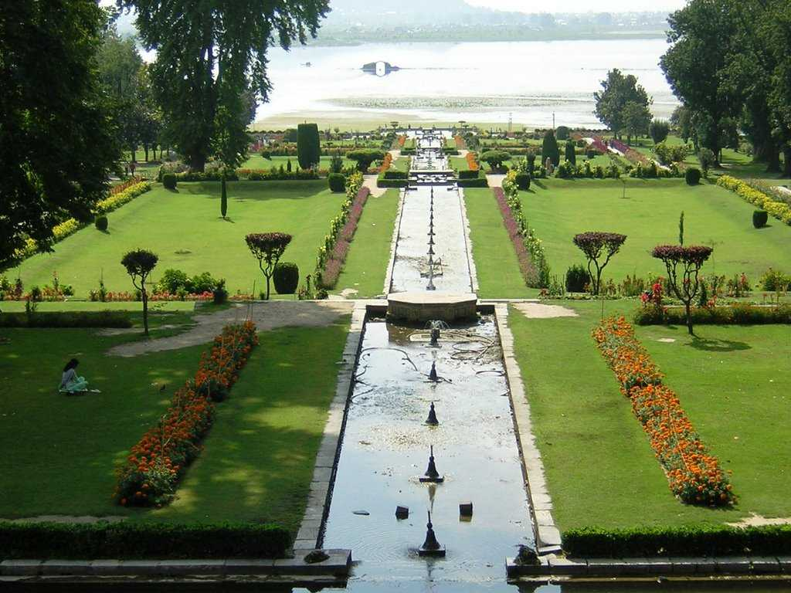
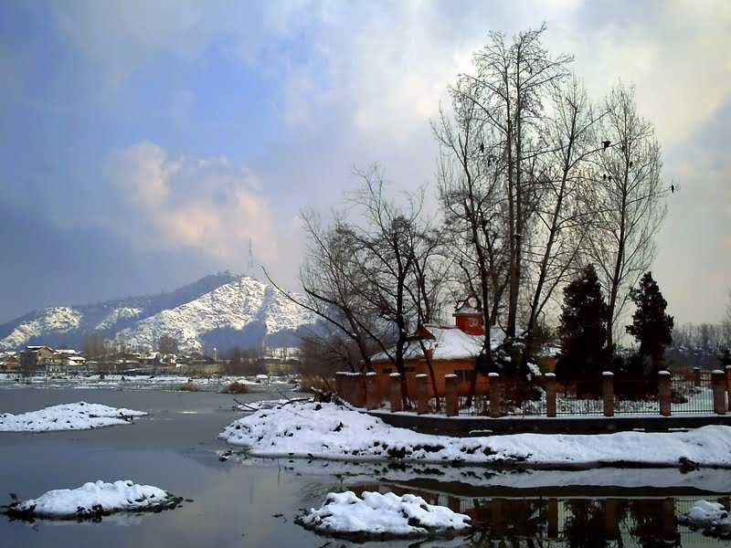
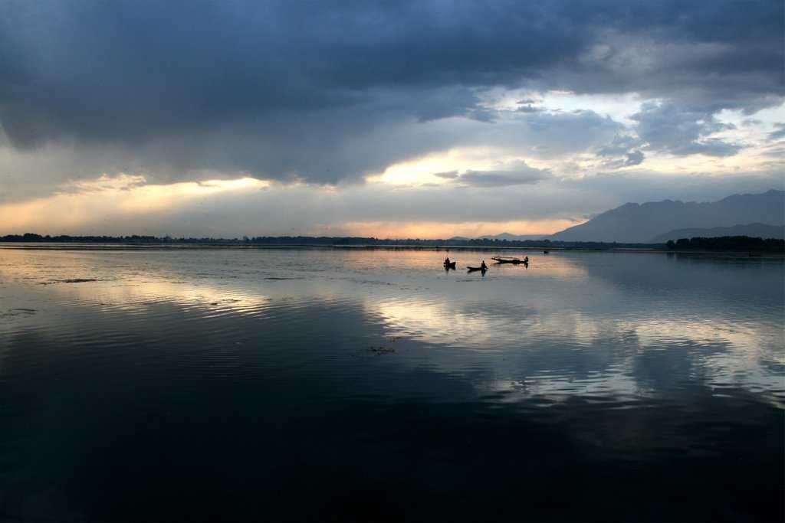
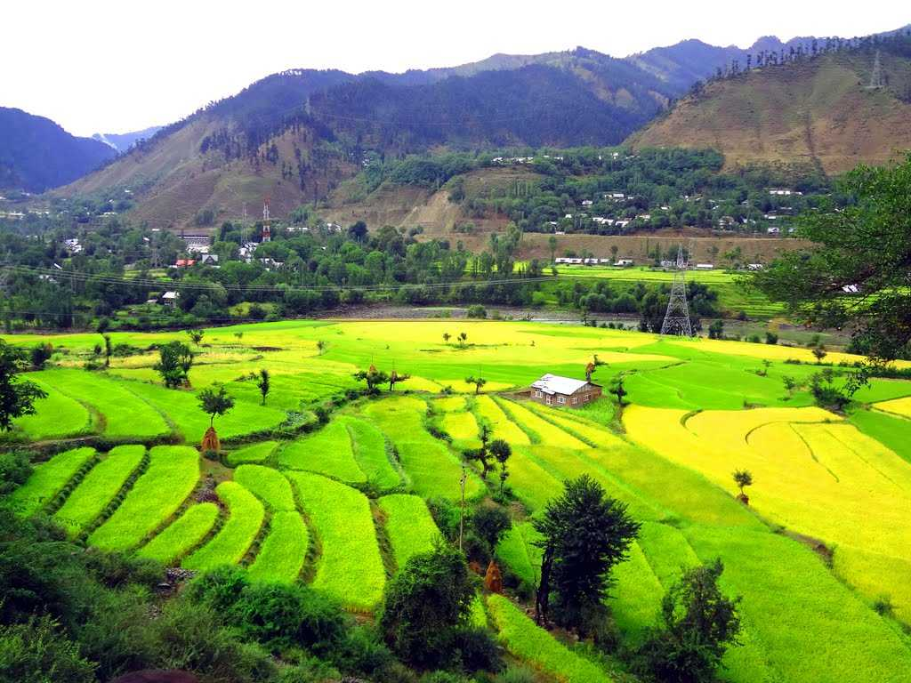
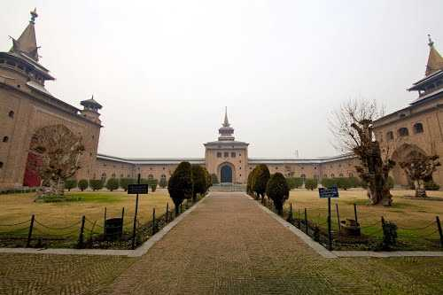

Jummu and Kashmir
The natural beauty of Jammu and Kashmir, as well as its wonderful climate, are well-known. This is India's greatest and most well-known tourist attraction.
Kashmir must be visited during the winter season, being the most popular season for visitors. Sonamarg, Gulmarg, Pahalgam, Yusmarg, Charar-i-Sharief, Sinthan top,
Vaishno Devi, and Patni top should all be on your itinerary. The most prominent festivals are Lohri and Baisakhi. Pulaos are a popular dish in this area. The location is accessible through a national highway, and you have various transportation options to get there.

Mugal Garden

Shankaracharya Temple

Dal Lake

Baramulla

Jamia Masjid
Siri Nagar
Famously known as 'Heaven on Earth, Srinagar is located in the union territory of Jammu & Kashmir, on the banks of river Jhelum. Known for its serene lakes, lush gardens, and Mughal-era architecture,